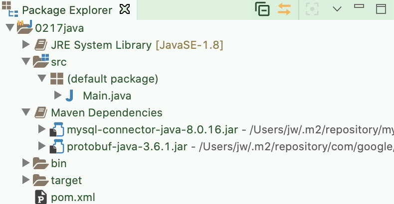

Spring
Maven
1.Maven의 개요
- Build : Source Code를 Compile을 수행하고 최종적인 실행 파일로 만드는 작업
- Java Build Tool
- Ant : XML로 기술한 빌드 설정에 따라 컴파일 및 의존 관계의 해결을 실시하는 도구 (사용빈도낮음)
- Maven : Apache에서 개발되고 있는 소프트웨어 프로젝트 관리 툴로 외부 라이브러리 사용을 편리하게 해주는 빌드 도구
- Gradle : Groovy로 작성하면 Ant 또는 Maven의 특징을 도입하여 만든 빌드 도구, Android의 IDE인 Android Studio에서 사용
- Maven 은 POM(Project Object Model) 이라는 것에 기초를 두어 프로젝트의 빌드, 테스트, 도큐멘테이션, 성과물의 배치 등의 라이프 사이클 전체를 관리
2.pom.xml
- Maven 프로젝트의 설정 파일 - pom.xml
- groupid : 도메인 이름
- artifactld : 출력물의 이름
- packaging : 어떤 프로젝트를 할것인가
- version : 빌드되는 프로젝트의 버전
- name : 프로젝트 이름
- url : 프로젝트 사이트가 있다면 사이트의 URL을 등록 ( 설명에 관련된 페이지등 )
- repositories : 라이브러리를 다운받을 저장소 , 중앙저장소가 아닌곳에서 다운로드 받고자 할 때 설정
- dependencies : 어떤 라이브러리를 가져올 것인가
(공공기관) 사용가능한 라이브러리 -> [ repository ] <--> 개발자, 개발자, 개발자 ...
라이센스, 버전문제 해결
- pom.xml 파일에 추가
<dependencies>
<dependency>
<groupId>mysql</groupId>
<artifactId>mysql-connector-java</artifactId>
<version>5.1.48</version>
</dependency>
</dependencies>
Maven 설정
- java build tool
1.build
- 컴파일(소스 코드를 운영체제나 Virtual Machine 이 이해할 수 있는 코드로 변환) 된 코드들을 가지고 실행 가능한 프로그램을 만들어내는 작업
- 코드 들의 순서라던가 포함관계를 파악해서 실행을 하게되면 메모리에 순서대로 적재(로드)해서 실행하도록 해주는 것
2.Java Build Tool의 종류
1) ant : build 만 해주는 tool
- 최근에는 거의 사용되지 않고 문법만 다른 툴에서 사용할 수 있도록 해주고 있다.
2) Maven : Build tool 이면서 외부 라이브러리 관리를 편리하게 해주는 tool
- 이전에 만들어진 java application 들은 거의 이 방식이다.
3) gradle : build tool 이면서 외부 라이브러리 관리를 편리하게 해주는 tool
- android가 채택한 방식
- build.gradle 이라는 설정 파일에 json 방식으로 설정
3.Maven
- pom.xml 파일을 이용해서 프로젝트를 관리
- pom.xml 파일에 설정을 하면 build를 할 때 그 설정에 따라 작업들을 자동으로 수행해주는 tool
4.maven 설치
- eclipse 계열의 IDE를 사용하면 내장되어 있다.
5.maven 프로젝트 생성
1) maven 프로젝트로 처음부터 생성
- eclipse 에서 maven 프로젝트를 만들거나 spring 프로젝트를 만드는 겨우
2) java application을 만들고 변환해서 생성
6.pom.xml 파일의 설정 태그
1) repositories
- 라이브러리를 다운로드 받을 저장소를 설정
- 설정하지 않으면 maven 중앙 저장소에서 다운로드
- 오라클의 경우 오픈 소스가 아니라서 중앙 저장소에 없기 때문에 repositories를 설정해야만 다운로드 가능
- 공공기관이나 대기업의 경우는 별도의 저장소를 가지는 경우가 많아서 그 저장소를 설정함.
2) dependencies
- 실제 다운로드 받을 외부 라이브러리를 설정
7.라이브러리 사용 과정
1) pom.xml 파일의 dependencies 태그에 라이브러리를 설정
2) project가 build 될 때 자신의 계정의 .p2 디렉토리(숨김)에서 라이브러리를 찾아서 사용
3) 없으면 저장소에서 다운로드 받아서 .p2에 저장하고 사용
8.인터넷이 느리거나 동시에 여러 컴퓨터가 접속해서 다운로드 받는 경우 제대로 다운로드가 안되는 경우가 있다.
- 이런 경우는 다른 컴퓨터에서 repository를 복사해서 붙여넣기 한 후 사용해도 됨.
9.MySQL 라이브러리의 클래스 로드
1) java application 프로젝트를 생성
2) Main 클래스를 만들어서 실행
public class Main {
public static void main(String[] args) {
try {
Class.forName("com.mysql.jdbc.Driver");
System.out.println("MySQL 드라이버 로드 성공");
}catch(Exception e) {
System.out.println("MySQL 드라이버 다운로드 실패");
}
}
}
3) 실행을 하면 드라이버 파일이 없어서 예외가 발생
4) 이전의 방식으로 이 문제를 해결하고자 하는 경우
- java application : MySQL 드라이버 다운로드 받고 프로젝트에 복사하고 파일을 선택한 후 build path에 추가
- java web application : MySQL 드라이버 다운로드 받고 프로젝트의 WebContent/WEB-INF/lib 디렉토리에 복사
5) maven project의 경우 - pom.xml 파일에 mysql 의존성만 설정하면 됨. (프로젝트종류와 상관없음)
- 프로젝트를 maven 프로젝트로 변환
- 프로젝트를 선택하고 마우스 오른쪽을 클릭한 후
- 생성된 pom.xml 파일에 의존성을 설정하는 코드를 추가

// 추가된 부분 의존성 추가
<dependencies>
<dependency>
<groupId>mysql</groupId>
<artifactId>mysql-connector-java</artifactId>
<version>8.0.16</version>
</dependency>
</dependencies>
</project>
6) 실행
- 프로젝트 안에 Maven Dependencies 라는 디렉토리가 1개 만들어지고 mysql 드라이버르 다운로드 하고 build path에 추가해 준다.
- 드라이버가 설치되어 예외가 발생하지 않는다.

STS(Spring Tool Suite) 설치
- 스프링 전용 Eclipse
- Spring 학습을 할 때는 이 Toll을 많이 사용하고 우리나라에서는 공공기관(전자정부 프레임워크)이나 대기업 프로젝트(삼성 - Any Framework 등)를 할 때는 대부분 전용 프레임워크를 사용하는데 사용법이 STS와 유사함
1.spring.io 사이트에서 다운로드
2.eclipse pulg-in으로 설치
- [help]-[Eclipse Market Pace]에서 sts를 검색
- 3.xx 버전 install
최근에 4.xx 버전이 출시 되어있는데 아직 현업에서는 3.xx 버전을 이용